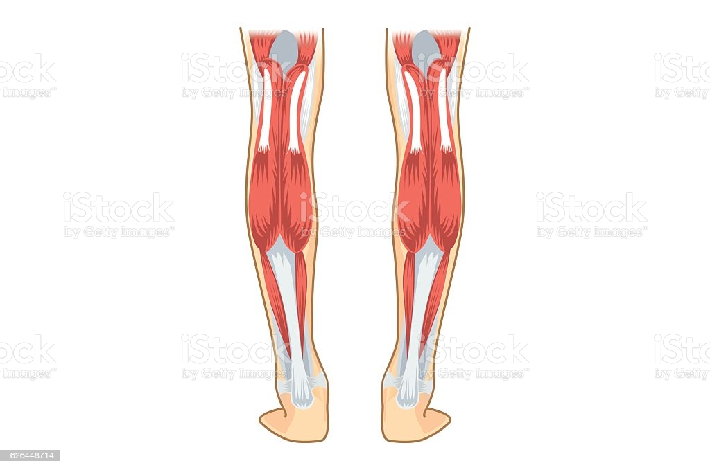

일반적으로 무릎 밑쪽 부분 볼록하게 튀어나온 뒷 부분을 종아리라 칭한다. 흔히 우리가 "장딴지"라고 말하는 부분인 것이다.

사진에서 보이는것처럼 위치하는 종아리근육은 여러가지 근육들로 이루어져 있는데 종아리 근육은 전체적으로 하체의 가운데에서 발과 허벅지를 잇는 근육이라고 생각할 수 있다.
이러한 종아리 하체를 사용하는 모든 움직임에 관여하는 근육이다.
▶자세 제어 역할
▶보행 및 주행 능력 도움
이러한 역할을 하는 종아리 근육은 다른 대표적인 하체 트레이닝을 할 때 수행하는 스쿼트나 데드리프트 같은 운동들의 퍼포먼스에 쓰이는 것은 물론이고, 족저근막염을 포함한 발 관련 질환이나 대퇴사두,이두 혹은 일상 생활속의 사고를 예방할 수 있는 중요한 근육이다.
이러한 다른 하체 근육들에 비해 관심을 받지 못하고 많이들 운동하지 않는 종아리근육을 위한 운동을하기 위해서는 어떤 운동이 있을까? 그에 대한 답변을 위해 유튜브 보통사람을 위한 운동채널에서 정보를 가져왔다
이렇게 종아리근육의 기능, 생김새, 그리고 위치에 대해서 간단하게 살펴보고 그에 대한 운동법에 대해 알아 보았으니 앞으로 비중이 높지않은 근육이라고 놓치지 말고 열심히 챙겨서 건강한 다리를 얻기를 바란다.